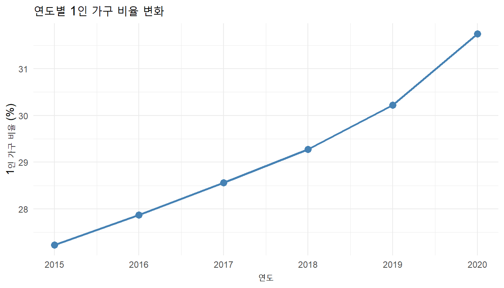
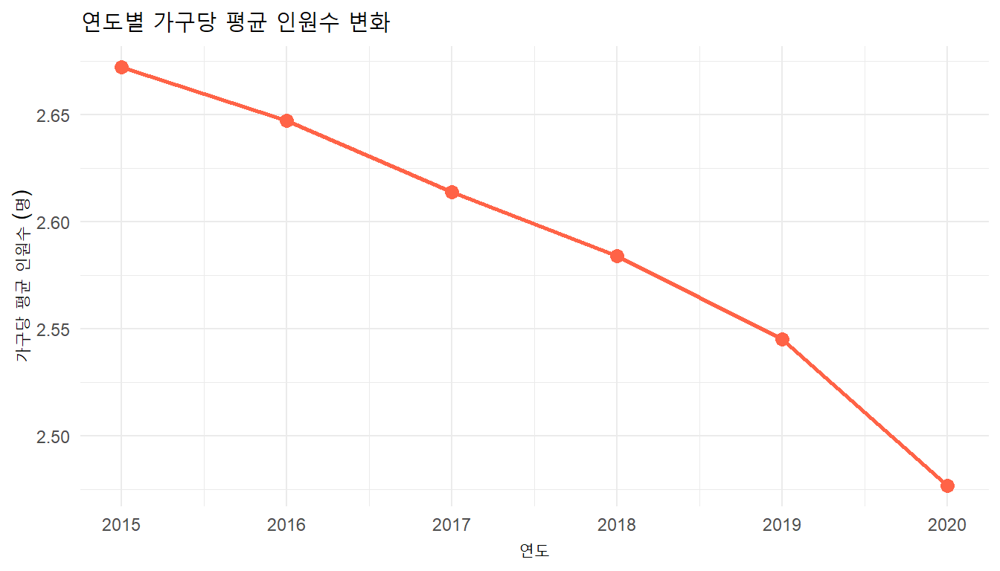

Chapter 3 데이터프레임
컴퓨터를 이용하여 자료를 처리하고 분석할 때 가장 널리 사용하는 형식은 MS Excel의 스프레드시트와 유사한 데이터프레임(data frame) 입니다.
데이터프레임은 다음과 같은 특징을 가집니다.
- 행(row): 전체 자료에서 하나의 구성 요소(entry, record, observation)에 해당하는 데이터를 모아 놓은 것
- 열(column): 전체 자료에서 하나의 특성(변수)을 나타내며, 같은 형식의 자료로 구성됨
- 인덱스(index): 각 행과 열을 지칭하는 이름 (R에서는 행이 1부터 시작하는 정수, 열은 이름)
- 열 이름(column name): 열을 구분하기 위해 사용하는 문자 형태의 식별자
본 강의에서는 데이터프레임을 보다 효율적이고 가독성 높게 다루기 위해 dplyr 패키지를 사용하겠습니다. dplyr은 tidyverse 생태계의 핵심 패키지로, 자료 처리에 자주 쓰이는 동사형 함수(select, filter, mutate, arrange, summarise, group_by, *_join 등)를 일관된 문법으로 제공합니다.
##
## 다음의 패키지를 부착합니다: 'dplyr'## The following objects are masked from 'package:stats':
##
## filter, lag## The following objects are masked from 'package:base':
##
## intersect, setdiff, setequal, union파이프 연산자
dplyr 코드는 거의 항상 파이프 연산자 %>% 와 함께 사용됩니다. x %>% f(y)는 f(x, y)와 같은 의미이며, 왼쪽 값을 오른쪽 함수의 첫 번째 인자로 전달합니다. 단축키로를 ctrl + shift + M을 사용하면 됩니다.
## [1] 3## [1] 33.1 데이터프레임의 정의와 구성요소
3.1.1 데이터프레임의 정의
이제 데이터프레임을 정의해 보겠습니다. 아래 코드는 5명의 이름, 성별, 나이, 키가 저장된 데이터프레임을 직접 생성하는 예시입니다.
df <- data.frame(
name = c("이철수", "김영희", "홍길동", "John Smith", "Mary Doe"),
gender = c("M", "F", "M", "M", "F"),
age = c(23, 25, 21, 33, 45),
height = c(153.5, 175.3, 163.4, 180.0, 165.7)
)
df## name gender age height
## 1 이철수 M 23 153.5
## 2 김영희 F 25 175.3
## 3 홍길동 M 21 163.4
## 4 John Smith M 33 180.0
## 5 Mary Doe F 45 165.7## [1] "data.frame"행 인덱스는 1부터 시작하는 정수(
1, 2, 3, 4, 5)로 부여됩니다. (Python pandas는 0부터 시작합니다.)열 인덱스(열 이름)는 문자열로 지정하며, 위 예시에서는
name,gender,age,height입니다.첫 번째 인자
name은 학생 이름을 나타내며, 원소들은 문자열 벡터입니다.두 번째 인자
gender는 학생 성별을 나타내며, 원소들은 문자열"M"과"F"로 구성된 벡터입니다.
주의:
gender와 같은 데이터는 통계학에서 팩터(factor) 또는 범주형 변수(categorical variable) 라고 부릅니다. 연속적인 수치와 달리 제한된 몇 개의 정해진 범주로만 분류되는 성질을 가지며, R에서는 이를 메모리 효율적으로 다루기 위해factor()함수로 팩터형으로 변환하여 사용하기도 합니다. dplyr은 문자열도 자동으로 잘 처리하므로, 명시적인 변환이 꼭 필요한 경우에만 변환하시면 됩니다.
- 세 번째 인자
age는 정수형 벡터, 네 번째 인자height는 실수형 벡터입니다.
## Rows: 5
## Columns: 4
## $ name <chr> "이철수", "김영희", "홍길동", "John Smith", "Mary Doe"
## $ gender <chr> "M", "F", "M", "M", "F"
## $ age <dbl> 23, 25, 21, 33, 45
## $ height <dbl> 153.5, 175.3, 163.4, 180.0, 165.7glimpse()는 dplyr이 제공하는 함수로, 각 열의 자료형과 일부 값을 가로 형태로 깔끔하게 보여줍니다.
3.1.2 열 선택
dplyr에서 열을 선택할 때는 select() 함수를 사용합니다. 인자에는 따옴표 없이 열 이름을 그대로 적습니다.
## name
## 1 이철수
## 2 김영희
## 3 홍길동
## 4 John Smith
## 5 Mary Doe## age height
## 1 23 153.5
## 2 25 175.3
## 3 21 163.4
## 4 33 180.0
## 5 45 165.7select()의 결과는 항상 데이터프레임 입니다. 만약 결과를 벡터 로 받고 싶다면 pull()을 사용합니다.
## [1] "이철수" "김영희" "홍길동" "John Smith" "Mary Doe"또한 한 개의 열만 가져올 때는 base R의 $ 표기법도 자주 사용됩니다.
## [1] "이철수" "김영희" "홍길동" "John Smith" "Mary Doe"3.1.3 행 선택
특정한 성질을 가진 행, 즉 자료의 구성 단위 중 일부만 선택할 때는 filter() 함수를 사용합니다. 괄호 안에 비교 연산자를 이용한 조건 표현식을 넣으면, 조건을 만족하는 행만 추출할 수 있습니다.
예를 들어, 성별이 남자인 구성원만 선택하려면 다음과 같이 작성합니다.
## name gender age height
## 1 이철수 M 23 153.5
## 2 홍길동 M 21 163.4
## 3 John Smith M 33 180.0내부적으로 gender == "M"은 각 행에 대해 참(TRUE) 또는 거짓(FALSE) 값을 가진 논리 벡터를 만들고, filter()가 그 결과가 TRUE인 행만 가져오는 방식입니다.
## [1] TRUE FALSE TRUE TRUE FALSE선택해야 할 경우의 수가 여러 개일 때는 R에 내장된 %in% 연산자를 사용합니다 (Python pandas의 .isin()과 같은 역할).
## name gender age height
## 1 김영희 F 25 175.3
## 2 John Smith M 33 180.0논리 연산자 |(OR)로 동일한 결과를 만들 수도 있습니다.
## name gender age height
## 1 김영희 F 25 175.3
## 2 John Smith M 33 180.0키가 160 이상인 남자 구성원만 선택하려면, 두 조건을 동시에 만족하도록 해야 합니다. filter()는 쉼표로 구분된 여러 조건을 자동으로 AND로 결합 해 줍니다.
## name gender age height
## 1 홍길동 M 21 163.4
## 2 John Smith M 33 180.0명시적으로 & 연산자를 써도 같은 결과를 얻습니다.
## name gender age height
## 1 홍길동 M 21 163.4
## 2 John Smith M 33 180.0나이가 30세 이하이거나(OR) 키가 160 미만인 행을 선택하려면 | 연산자를 사용합니다.
## name gender age height
## 1 이철수 M 23 153.5
## 2 김영희 F 25 175.3
## 3 홍길동 M 21 163.4dplyr에서 행을 조건으로 인덱싱할 때 따라야 할 규칙입니다.
- 비교 연산자:
<,<=,>,>=,!=,==으로 조건을 만듭니다. - 조건 연결: OR 는
|(파이프 기호), AND 는&(엠퍼샌드 기호)를 사용합니다. filter()안에서 쉼표(,)는 자동으로 AND 로 해석됩니다.- 괄호 사용 권장: 두 개 이상의 비교 표현식을 연결할 때 가독성을 위해 각 표현식을 괄호로 묶어주는 것이 좋습니다.
3.1.4 행과 열 선택
이제 특정한 열과 행을 동시에 슬라이싱하는 방법을 알아보겠습니다. 키가 170 이상인 사람들의 이름을 선택하는 코드를 작성해 보겠습니다.
dplyr에서는 filter()로 행을 거른 뒤 select()로 열을 고르거나, 단일 벡터로 받으려면 pull() 을 사용합니다. 파이프 |> 덕분에 여러 단계를 자연스럽게 연결 할 수 있습니다.
## name
## 1 김영희
## 2 John Smith## [1] "김영희" "John Smith"## name height
## 1 이철수 153.5
## 2 홍길동 163.4
## 3 John Smith 180.03.1.5 위치 기반 인덱싱
R에서는 별도의 메소드를 쓰지 않고 기본 대괄호 안에 행과 열 인덱스를 쉼표로 구분하여 지정합니다.
R은 1부터 시작합니다. 즉, 첫 번째 행과 첫 번째 열의 위치는
(1, 1)입니다. Python의df.iloc[0, 0]이 R에서는df[1, 1]에 해당합니다.
## [1] "이철수"## [1] 165.7## gender age
## 4 M 33R에서는 슬라이싱의 끝 인덱스가 포함 됩니다. 즉 df[, 2:3]은 2열과 3열을 모두 가져옵니다.
모든 행이나 열을 선택할 때 R에서는 그 자리를 비워두면 됩니다.
## [1] 23 25 21 33 45## name gender age height
## 1 이철수 M 23 153.5특정 행/열 이후의 모든 값을 선택하려면 다음과 같이 작성합니다.
## name gender age height
## 2 김영희 F 25 175.3
## 3 홍길동 M 21 163.4
## 4 John Smith M 33 180.0
## 5 Mary Doe F 45 165.7## gender age height
## 1 M 23 153.5
## 2 F 25 175.3
## 3 M 21 163.4
## 4 M 33 180.0
## 5 F 45 165.7R 고유의 강력한 기능으로 음수 인덱스 가 있는데, 해당 위치의 원소를 제외 한다는 의미입니다.
## name gender age height
## 3 홍길동 M 21 163.4
## 4 John Smith M 33 180.0
## 5 Mary Doe F 45 165.7dplyr 함수로도 동일한 작업을 표현할 수 있습니다.
## name gender age height
## 1 이철수 M 23 153.5## name gender age height
## 1 김영희 F 25 175.3
## 2 홍길동 M 21 163.4
## 3 John Smith M 33 180.0
## 4 Mary Doe F 45 165.7## name gender age height
## 1 홍길동 M 21 163.4
## 2 John Smith M 33 180.0
## 3 Mary Doe F 45 165.7## name gender age height
## 1 John Smith M 33 180.0
## 2 Mary Doe F 45 165.7## name gender age height
## 1 이철수 M 23 153.5
## 2 김영희 F 25 175.3
## 3 홍길동 M 21 163.4데이터프레임 인덱싱을 정리하면 다음과 같습니다.
이름(라벨) 기반 인덱싱
- 특정 열을 이름으로 선택:
select(col1, col2),pull(col),df$col - 조건식으로 행 선택:
filter(조건)
위치 기반 인덱싱
- 행·열의 순서 위치를 정수로 지정합니다.
- 모든 위치는 1부터 시작 합니다.
- 기본 대괄호
df[i, j]또는slice()/select(위치)를 사용합니다.
3.2 데이터프레임의 정리
이 절에서는 데이터프레임을 정리할 때 자주 사용되는 작업들을 살펴보겠습니다.
3.2.1 자료의 정리
앞 절에서 살펴본 내용은 데이터의 일부분을 조건에 맞게 열과 행을 선택하여, 필요한 데이터만 추출하는 작업이었습니다.
이번 절에서는 컴퓨터에서 사용할 수 있도록 데이터를 읽은 후, 데이터프레임을 정렬하거나 열 이름을 바꾸어 새로운 자료를 만들기 위한 전처리 작업에 대해 알아보겠습니다.
자료를 주어진 규칙에 따라 정렬(sorting) 하는 작업은 분석 단계에서 많이 사용되지만, 자료를 처음 받아 살펴볼 때에도 자주 활용됩니다. 초기 자료는 대부분 우리가 예상하지 못한 오류나 결함을 포함할 가능성이 있습니다. 빅데이터 시대에는 자료 전체를 사람이 직접 확인하기 어렵지만, 일부를 출력해 보면서 원하는 값이 제대로 입력되었는지 간단하게 확인하는 습관은 매우 중요합니다.
R에서는 한글을 자유롭게 변수명·값으로 사용할 수 있지만, 자료를 여러 프로그램 간 변환하여 작업하는 과정에서 한글 인코딩 때문에 호환이 원활하지 않은 경우가 여전히 많습니다. 특히 변수명에 한글을 사용하면 df$열이름 같은 표기에서 백틱 처리를 해야 하는 등 코드가 번거로워지므로, 분석용 데이터프레임에서는 열 이름을 영문으로 바꾸는 것이 일반적입니다.
이제 데이터프레임을 원하는 대로 정렬하고, 열과 행을 지우고, 열 이름을 바꾸는 작업에 대해 살펴보겠습니다. 먼저, 예제로 사용할 자료를 살펴보겠습니다.
3.2.2 한국의 가구수
최근 우리나라의 인구 동향은 급격한 변화를 보이고 있습니다. 특히 1인 가구 수의 증가는 우리의 생활에 많은 변화를 가져오고 있습니다. 이제 2015년부터 2020년까지 6년 동안 우리나라의 가구 분포를 비교하여, 가구의 구성이 어떻게 변화했는지 살펴보겠습니다.
다음 자료는 통계청 국가통계포털에서 제공하는 인구총조사(등록센서스) 자료입니다. 이 자료는 시·도별로 6년간의 가구 수를, 가구원 수별로 구분하여 정리한 것입니다.
외부 CSV 파일을 데이터프레임으로 읽어들이려면 readr 패키지의 read_csv() 함수를 사용합니다 (base R의 read.csv()도 사용 가능하지만, read_csv()가 더 빠르고 tibble로 결과를 반환합니다).
여기서 locale = locale(encoding = "EUC-KR")는 파일의 언어 형식(인코딩 방식) 을 지정하는 옵션입니다.
"EUC-KR"또는"CP949": Windows의 한국어 환경에서 만들어진 CSV에 가장 흔히 쓰이는 인코딩입니다."UTF-8": 최근의 표준 인코딩입니다. macOS, Linux, 웹에서 만든 파일은 보통 UTF-8 입니다.- 한글이 깨져 보인다면,
EUC-KR↔︎UTF-8중에서 정상적으로 작동하는 방식을 선택합니다.
url <- "https://uos-bigdata.github.io/bigdata-exercise/_downloads/5e7e8554845467504c4ee6ad0a1012d6/korea_house_data_01.csv"
house <- read_csv(url, locale = locale(encoding = "EUC-KR"))## Rows: 108 Columns: 10
## ── Column specification ──────────────────────────────────────────────────────────────
## Delimiter: ","
## chr (1): 행정구역별(읍면동)
## dbl (9): 시점, 일반가구_계, 1인, 2인, 3인, 4인, 5인, 6인, 7인 이상
##
## ℹ Use `spec()` to retrieve the full column specification for this data.
## ℹ Specify the column types or set `show_col_types = FALSE` to quiet this message.## # A tibble: 10 × 10
## 시점 `행정구역별(읍면동)` 일반가구_계 `1인` `2인` `3인` `4인` `5인` `6인`
## <dbl> <chr> <dbl> <dbl> <dbl> <dbl> <dbl> <dbl> <dbl>
## 1 2015 전국 19111030 5203440 4993818 4100979 3.59e6 940413 217474
## 2 2015 서울특별시 3784490 1115744 930467 817440 7.02e5 169436 38547
## 3 2015 부산광역시 1335900 361749 366048 296742 2.38e5 56971 12928
## 4 2015 대구광역시 928528 239517 239824 208795 1.84e5 44071 9582
## 5 2015 인천광역시 1045417 243678 265079 245135 2.21e5 55230 12253
## 6 2015 광주광역시 567157 163577 137662 115701 1.10e5 32199 6647
## 7 2015 대전광역시 582504 169391 140603 122088 1.12e5 30022 6489
## 8 2015 울산광역시 423412 103551 104101 100230 9.07e4 19914 3851
## 9 2015 세종특별자치시 75219 21889 18010 15219 1.46e4 4238 994
## 10 2015 경기도 4384742 1026471 1062222 1005330 9.71e5 246638 56117
## # ℹ 1 more variable: `7인 이상` <dbl>참고: 한글 열 이름은 dplyr에서 사용할 때 백틱(`) 으로 감싸 주어야 합니다. 예:
house |> select(`행정구역별(읍면동)`). 뒤에서 영문 이름으로 바꾸어 줄 것입니다.
head(house, 10)은 데이터프레임의 처음 10개 행만을 출력합니다. 데이터프레임에 행이 아주 많을 때 앞부분만 간단히 확인하는 데 유용합니다 (Python pandas의 house.head(10) 과 같음).
## [1] 108 10## Rows: 108
## Columns: 10
## $ 시점 <dbl> 2015, 2015, 2015, 2015, 2015, 2015, 2015, 2015, 2015, 2…
## $ `행정구역별(읍면동)` <chr> "전국", "서울특별시", "부산광역시", "대구광역시", "인천광역시", "광주광역시", "대전광…
## $ 일반가구_계 <dbl> 19111030, 3784490, 1335900, 928528, 1045417, 567157, 58…
## $ `1인` <dbl> 5203440, 1115744, 361749, 239517, 243678, 163577, 16939…
## $ `2인` <dbl> 4993818, 930467, 366048, 239824, 265079, 137662, 140603…
## $ `3인` <dbl> 4100979, 817440, 296742, 208795, 245135, 115701, 122088…
## $ `4인` <dbl> 3588931, 701945, 238031, 184258, 220538, 109612, 112055…
## $ `5인` <dbl> 940413, 169436, 56971, 44071, 55230, 32199, 30022, 1991…
## $ `6인` <dbl> 217474, 38547, 12928, 9582, 12253, 6647, 6489, 3851, 99…
## $ `7인 이상` <dbl> 65975, 10911, 3431, 2481, 3504, 1759, 1856, 1030, 309, …3.2.3 정렬
먼저, 데이터프레임의 행을 지정된 열의 값을 기준으로 정렬하는 방법을 알아보겠습니다. dplyr에서는 arrange() 함수를 사용합니다.
- 정렬 기준이 될 열 이름을 인자로 넘깁니다.
- 정렬 순서는 기본이 오름차순이며, 내림차순으로 정렬하려면
desc()함수로 감쌉니다.
데이터프레임을 행정구역별(읍면동)로 정렬하면 다음과 같이 작성합니다.
## # A tibble: 108 × 10
## 시점 `행정구역별(읍면동)` 일반가구_계 `1인` `2인` `3인` `4인` `5인` `6인`
## <dbl> <chr> <dbl> <dbl> <dbl> <dbl> <dbl> <dbl> <dbl>
## 1 2015 강원도 606117 189379 178470 116384 87182 25922 6567
## 2 2016 강원도 616346 197917 180639 117408 86362 25441 6477
## 3 2017 강원도 620729 199645 187312 117912 83773 24178 6020
## 4 2018 강원도 628484 206295 193105 117713 81241 22835 5522
## 5 2019 강원도 633942 208857 200035 117416 79476 21560 5043
## 6 2020 강원도 661039 231371 206755 117504 79073 20669 4409
## 7 2015 경기도 4384742 1026471 1062222 1005330 971146 246638 56117
## 8 2016 경기도 4484424 1067916 1091119 1033608 973096 246575 55612
## 9 2017 경기도 4602950 1124541 1146712 1056797 966018 240634 53016
## 10 2018 경기도 4751497 1197586 1213259 1084338 958729 234095 49527
## # ℹ 98 more rows
## # ℹ 1 more variable: `7인 이상` <dbl>두 개의 열을 기준으로 정렬할 때는 arrange() 안에 열 이름을 순서대로 나열합니다.
## # A tibble: 108 × 10
## 시점 `행정구역별(읍면동)` 일반가구_계 `1인` `2인` `3인` `4인` `5인` `6인`
## <dbl> <chr> <dbl> <dbl> <dbl> <dbl> <dbl> <dbl> <dbl>
## 1 2015 강원도 606117 189379 178470 116384 87182 25922 6567
## 2 2016 강원도 616346 197917 180639 117408 86362 25441 6477
## 3 2017 강원도 620729 199645 187312 117912 83773 24178 6020
## 4 2018 강원도 628484 206295 193105 117713 81241 22835 5522
## 5 2019 강원도 633942 208857 200035 117416 79476 21560 5043
## 6 2020 강원도 661039 231371 206755 117504 79073 20669 4409
## 7 2015 경기도 4384742 1026471 1062222 1005330 971146 246638 56117
## 8 2016 경기도 4484424 1067916 1091119 1033608 973096 246575 55612
## 9 2017 경기도 4602950 1124541 1146712 1056797 966018 240634 53016
## 10 2018 경기도 4751497 1197586 1213259 1084338 958729 234095 49527
## # ℹ 98 more rows
## # ℹ 1 more variable: `7인 이상` <dbl>특정한 연도의 자료만 선택할 수도 있습니다. 예를 들어, 2020년의 가구수만 보고 총 가구수 기준으로 내림차순 정렬하려면 다음과 같이 합니다. 파이프로 자연스럽게 연결되는 것이 dplyr의 큰 장점입니다.
## # A tibble: 18 × 10
## 시점 `행정구역별(읍면동)` 일반가구_계 `1인` `2인` `3인` `4인` `5인` `6인`
## <dbl> <chr> <dbl> <dbl> <dbl> <dbl> <dbl> <dbl> <dbl>
## 1 2020 전국 20926710 6643354 5864525 4200629 3.27e6 761417 147172
## 2 2020 경기도 5098431 1406010 1350139 1119823 9.51e5 218173 42094
## 3 2020 서울특별시 3982290 1390701 1033901 792690 6.03e5 130122 25770
## 4 2020 부산광역시 1405037 455207 411455 282233 2.04e5 42608 7874
## 5 2020 경상남도 1350155 417737 399700 270061 2.06e5 46516 8410
## 6 2020 인천광역시 1147200 324841 316387 251928 1.99e5 44949 8440
## 7 2020 경상북도 1131819 388791 363061 202539 1.37e5 32174 6388
## 8 2020 대구광역시 985816 304543 276237 205048 1.60e5 33131 5976
## 9 2020 충청남도 892222 304973 264909 159754 1.22e5 32419 6618
## 10 2020 전라남도 761518 256633 251506 131372 8.79e4 26561 5727
## 11 2020 전라북도 755575 255269 233334 134414 9.69e4 27962 5920
## 12 2020 충청북도 678922 236208 198840 122347 9.13e4 24143 4694
## 13 2020 강원도 661039 231371 206755 117504 7.91e4 20669 4409
## 14 2020 대전광역시 631208 228842 164795 116989 9.37e4 21883 4034
## 15 2020 광주광역시 599217 193948 162403 115978 9.73e4 24613 4011
## 16 2020 울산광역시 444087 122848 123591 99739 7.95e4 15447 2398
## 17 2020 제주특별자치도 263068 81855 74308 49903 3.87e4 13719 3380
## 18 2020 세종특별자치시 139106 43577 33204 28307 2.64e4 6328 1029
## # ℹ 1 more variable: `7인 이상` <dbl>참고: 원본 변경 여부
R/dplyr 에서는 모든 함수가 원본을 변경하지 않고 새로운 데이터프레임을 반환 합니다. 결과를 유지하려면 항상 새로운 변수에 할당해야 합니다.
## # A tibble: 5 × 10
## 시점 `행정구역별(읍면동)` 일반가구_계 `1인` `2인` `3인` `4인` `5인` `6인`
## <dbl> <chr> <dbl> <dbl> <dbl> <dbl> <dbl> <dbl> <dbl>
## 1 2015 전국 19111030 5203440 4993818 4100979 3588931 940413 217474
## 2 2015 서울특별시 3784490 1115744 930467 817440 701945 169436 38547
## 3 2015 부산광역시 1335900 361749 366048 296742 238031 56971 12928
## 4 2015 대구광역시 928528 239517 239824 208795 184258 44071 9582
## 5 2015 인천광역시 1045417 243678 265079 245135 220538 55230 12253
## # ℹ 1 more variable: `7인 이상` <dbl>정렬한 결과를 유지하려면 새 변수에 할당하거나 원래 변수에 덮어씁니다.
## # A tibble: 5 × 10
## 시점 `행정구역별(읍면동)` 일반가구_계 `1인` `2인` `3인` `4인` `5인` `6인`
## <dbl> <chr> <dbl> <dbl> <dbl> <dbl> <dbl> <dbl> <dbl>
## 1 2015 전국 19111030 5203440 4993818 4100979 3588931 940413 217474
## 2 2015 서울특별시 3784490 1115744 930467 817440 701945 169436 38547
## 3 2015 부산광역시 1335900 361749 366048 296742 238031 56971 12928
## 4 2015 대구광역시 928528 239517 239824 208795 184258 44071 9582
## 5 2015 인천광역시 1045417 243678 265079 245135 220538 55230 12253
## # ℹ 1 more variable: `7인 이상` <dbl>3.2.4 행과 열 지우기
처음 자료를 데이터프레임으로 만든 후에는 특정한 행이나 열을 제거해야 할 경우가 자주 발생합니다.
3.2.4.1 열 지우기
house 데이터프레임에서 일반가구_계 열을 삭제해 보겠습니다. 이 열은 1인부터 7인 이상까지의 모든 가구 수를 합한 총합(집계) 데이터로, 기초 데이터가 잘 보존되어 있다면 언제든 다시 계산할 수 있으므로 분석 전 정리 과정에서 삭제해도 무방합니다.
dplyr에서는 select() 안에 음수 부호(-) 를 붙여 제외할 열을 표시합니다.
## # A tibble: 5 × 9
## 시점 `행정구역별(읍면동)` `1인` `2인` `3인` `4인` `5인` `6인` `7인 이상`
## <dbl> <chr> <dbl> <dbl> <dbl> <dbl> <dbl> <dbl> <dbl>
## 1 2015 전국 5203440 4993818 4100979 3588931 940413 217474 65975
## 2 2015 서울특별시 1115744 930467 817440 701945 169436 38547 10911
## 3 2015 부산광역시 361749 366048 296742 238031 56971 12928 3431
## 4 2015 대구광역시 239517 239824 208795 184258 44071 9582 2481
## 5 2015 인천광역시 243678 265079 245135 220538 55230 12253 3504여러 열을 동시에 지우고 싶을 때는 c()로 묶어 줍니다.
## # A tibble: 3 × 8
## 시점 `행정구역별(읍면동)` `1인` `2인` `3인` `4인` `5인` `6인`
## <dbl> <chr> <dbl> <dbl> <dbl> <dbl> <dbl> <dbl>
## 1 2015 전국 5203440 4993818 4100979 3588931 940413 217474
## 2 2015 서울특별시 1115744 930467 817440 701945 169436 38547
## 3 2015 부산광역시 361749 366048 296742 238031 56971 12928또는 베이스 R의 컬럼명 목록을 확인하면서 작업할 수도 있습니다.
## [1] "시점" "행정구역별(읍면동)" "일반가구_계"
## [4] "1인" "2인" "3인"
## [7] "4인" "5인" "6인"
## [10] "7인 이상"## [1] "시점" "행정구역별(읍면동)" "일반가구_계"
## [4] "1인" "2인" "3인"
## [7] "4인" "5인" "6인"
## [10] "7인 이상"결과를 유지하려면 다시 할당해야 합니다.
## # A tibble: 3 × 9
## 시점 `행정구역별(읍면동)` `1인` `2인` `3인` `4인` `5인` `6인` `7인 이상`
## <dbl> <chr> <dbl> <dbl> <dbl> <dbl> <dbl> <dbl> <dbl>
## 1 2015 전국 5203440 4993818 4100979 3588931 940413 217474 65975
## 2 2015 서울특별시 1115744 930467 817440 701945 169436 38547 10911
## 3 2015 부산광역시 361749 366048 296742 238031 56971 12928 34313.2.4.2 행 지우기
데이터프레임 house의 행정구역별(읍면동) 열을 살펴보면 ‘전국’ 이라는 값이 포함되어 있습니다. ’전국’은 전체 단위의 총합 정보를 확인할 때는 유용하지만, 시·도 단위 데이터와 섞여 있으면 평균을 내거나 시각화를 할 때 심각한 오류(중복 계산 등)를 일으킬 수 있습니다.
행을 지우는 가장 직관적인 방법은 filter()로 원하는 행만 남기는 것 입니다.
## # A tibble: 5 × 9
## 시점 `행정구역별(읍면동)` `1인` `2인` `3인` `4인` `5인` `6인` `7인 이상`
## <dbl> <chr> <dbl> <dbl> <dbl> <dbl> <dbl> <dbl> <dbl>
## 1 2015 서울특별시 1115744 930467 817440 701945 169436 38547 10911
## 2 2015 부산광역시 361749 366048 296742 238031 56971 12928 3431
## 3 2015 대구광역시 239517 239824 208795 184258 44071 9582 2481
## 4 2015 인천광역시 243678 265079 245135 220538 55230 12253 3504
## 5 2015 광주광역시 163577 137662 115701 109612 32199 6647 1759결과를 유지하려면 다시 할당합니다.
## # A tibble: 3 × 9
## 시점 `행정구역별(읍면동)` `1인` `2인` `3인` `4인` `5인` `6인` `7인 이상`
## <dbl> <chr> <dbl> <dbl> <dbl> <dbl> <dbl> <dbl> <dbl>
## 1 2015 서울특별시 1115744 930467 817440 701945 169436 38547 10911
## 2 2015 부산광역시 361749 366048 296742 238031 56971 12928 3431
## 3 2015 대구광역시 239517 239824 208795 184258 44071 9582 24813.2.5 열 이름 바꾸기
자료를 정리하는 과정에서 열 이름을 바꾸는 일은 매우 자주 발생합니다. 한글 열 이름은 dplyr에서 다룰 때 백틱이 필요하므로 영문으로 바꾸는 것이 편합니다.
dplyr에서는 rename(새이름 = 옛이름) 함수를 사용합니다.
house <- house %>% rename(
year = 시점,
region = `행정구역별(읍면동)`,
p1 = `1인`,
p2 = `2인`,
p3 = `3인`,
p4 = `4인`,
p5 = `5인`,
p6 = `6인`,
p7plus = `7인 이상`
)
head(house, 5)## # A tibble: 5 × 9
## year region p1 p2 p3 p4 p5 p6 p7plus
## <dbl> <chr> <dbl> <dbl> <dbl> <dbl> <dbl> <dbl> <dbl>
## 1 2015 서울특별시 1115744 930467 817440 701945 169436 38547 10911
## 2 2015 부산광역시 361749 366048 296742 238031 56971 12928 3431
## 3 2015 대구광역시 239517 239824 208795 184258 44071 9582 2481
## 4 2015 인천광역시 243678 265079 245135 220538 55230 12253 3504
## 5 2015 광주광역시 163577 137662 115701 109612 32199 6647 1759또는 베이스 R의 colnames() 또는 names()에 새로운 벡터를 할당해 한꺼번에 바꿀 수도 있습니다.
3.2.6 외부 파일로 저장하기
정리된 데이터프레임은 외부 파일로 저장하여 보관하는 것이 좋습니다. R 스크립트와 함께 두면 원자료가 바뀌더라도 거의 같은 절차로 자동 재생산할 수 있어, 엑셀의 수작업과는 비교할 수 없을 만큼 효율적입니다. 이것이 R과 같은 프로그래밍 언어를 배우는 중요한 이유 중 하나입니다.
데이터프레임을 CSV 파일로 저장할 때는 readr 패키지의 write_csv() 함수를 사용합니다 (기본 인코딩은 UTF-8).
엑셀에서 한국어 윈도우 환경에서 곧바로 열기 위해 CP949 인코딩으로 저장하려면 base R의 write.csv() 와 fileEncoding 옵션을 사용합니다.
3.2.7 열 추가하기
데이터프레임에 새로운 열을 추가할 때는 mutate() 함수를 사용합니다. mutate(새컬럼 = 식) 형태로 호출하며, 기존 열을 자유롭게 참조할 수 있습니다.
예를 들어, p1 열과 p2 열을 더한 p1_p2 를 새롭게 만들어 봅시다.
## # A tibble: 5 × 5
## year region p1 p2 p1_p2
## <dbl> <chr> <dbl> <dbl> <dbl>
## 1 2015 서울특별시 1115744 930467 2046211
## 2 2015 부산광역시 361749 366048 727797
## 3 2015 대구광역시 239517 239824 479341
## 4 2015 인천광역시 243678 265079 508757
## 5 2015 광주광역시 163577 137662 301239mutate()는 여러 열을 한 번에 추가할 수도 있습니다.
house %>%
mutate(p1_p2 = p1 + p2,
p3_p4 = p3 + p4) %>%
select(year, region, p1_p2, p3_p4) %>%
head(3)## # A tibble: 3 × 4
## year region p1_p2 p3_p4
## <dbl> <chr> <dbl> <dbl>
## 1 2015 서울특별시 2046211 1519385
## 2 2015 부산광역시 727797 534773
## 3 2015 대구광역시 479341 3930533.3 데이터프레임의 요약
이 절에서는 데이터프레임을 활용하여 새로운 정보를 생성하는 방법을 학습합니다.
- 새로운 열 만들기 (
mutate) - 열에 대한 요약 통계 구하기 (
summarise) - 자료의 그룹화 (
group_by+summarise)
3.3.1 열의 요약
먼저, 간단한 데이터프레임으로 기초적인 작업부터 시작해 보겠습니다. 예시로 기상자료개방포털에서 최근 5년간 서울의 기온과 강수량 자료를 사용하겠습니다.
url <- "https://uos-bigdata.github.io/bigdata-exercise/_downloads/98f9e204219d61cb77286b7a5fed705b/weather_stats.csv"
weather <- read_csv(url, locale = locale(encoding = "EUC-KR"))## Rows: 5 Columns: 5
## ── Column specification ──────────────────────────────────────────────────────────────
## Delimiter: ","
## chr (1): 일시
## dbl (4): 평균기온(℃), 최고기온 평균(℃), 최저기온 평균(℃), 강수량(mm)
##
## ℹ Use `spec()` to retrieve the full column specification for this data.
## ℹ Specify the column types or set `show_col_types = FALSE` to quiet this message.## # A tibble: 5 × 5
## 일시 `평균기온(℃)` `최고기온 평균(℃)` `최저기온 평균(℃)` `강수량(mm)`
## <chr> <dbl> <dbl> <dbl> <dbl>
## 1 2020년 13.2 17.9 9.4 1651.
## 2 2019년 13.5 18.5 9.3 891.
## 3 2018년 12.9 17.9 8.8 1284.
## 4 2017년 13 18.1 8.8 1233.
## 5 2016년 13.6 18.5 9.4 992.다루기 쉽도록 열 이름을 영문으로 바꿉니다.
## # A tibble: 5 × 5
## year avg_t max_t min_t rain
## <chr> <dbl> <dbl> <dbl> <dbl>
## 1 2020년 13.2 17.9 9.4 1651.
## 2 2019년 13.5 18.5 9.3 891.
## 3 2018년 12.9 17.9 8.8 1284.
## 4 2017년 13 18.1 8.8 1233.
## 5 2016년 13.6 18.5 9.4 992.3.3.1.1 새로운 열 만들기
데이터를 분석할 때 자주 하는 일 가운데 하나는 기존 열을 조합하여 새로운 정보를 가진 열을 만드는 것입니다. 예를 들어, weather의 기온은 섭씨(℃) 단위로 주어져 있는데, 이를 화씨(℉)로 변환한 새로운 열을 만들어 보겠습니다.
섭씨를 화씨로 바꾸는 공식은 다음과 같습니다.
\[ F = 32 + 1.8 \times C \]
## # A tibble: 5 × 6
## year avg_t max_t min_t rain avg_t_F
## <chr> <dbl> <dbl> <dbl> <dbl> <dbl>
## 1 2020년 13.2 17.9 9.4 1651. 55.8
## 2 2019년 13.5 18.5 9.3 891. 56.3
## 3 2018년 12.9 17.9 8.8 1284. 55.2
## 4 2017년 13 18.1 8.8 1233. 55.4
## 5 2016년 13.6 18.5 9.4 992. 56.5이번에는 최고기온 평균과 최저기온 평균의 평균을 구하여 새로운 열을 만들어 보겠습니다.
## # A tibble: 5 × 7
## year avg_t max_t min_t rain avg_t_F avg_t_minmax
## <chr> <dbl> <dbl> <dbl> <dbl> <dbl> <dbl>
## 1 2020년 13.2 17.9 9.4 1651. 55.8 13.6
## 2 2019년 13.5 18.5 9.3 891. 56.3 13.9
## 3 2018년 12.9 17.9 8.8 1284. 55.2 13.4
## 4 2017년 13 18.1 8.8 1233. 55.4 13.4
## 5 2016년 13.6 18.5 9.4 992. 56.5 14.0여러 열의 행별 평균이나 합을 자주 계산한다면, rowwise() + c_across() 조합 또는 rowMeans()/rowSums() 함수를 사용할 수 있습니다.
## # A tibble: 5 × 8
## year avg_t max_t min_t rain avg_t_F avg_t_minmax avg_t_minmax_v2
## <chr> <dbl> <dbl> <dbl> <dbl> <dbl> <dbl> <dbl>
## 1 2020년 13.2 17.9 9.4 1651. 55.8 13.6 13.6
## 2 2019년 13.5 18.5 9.3 891. 56.3 13.9 13.9
## 3 2018년 12.9 17.9 8.8 1284. 55.2 13.4 13.4
## 4 2017년 13 18.1 8.8 1233. 55.4 13.4 13.4
## 5 2016년 13.6 18.5 9.4 992. 56.5 14.0 14.03.3.1.2 열의 요약 통계
이제 모든 수치형 열에 대한 평균을 구해 보겠습니다. dplyr에서는 summarise() 함수를 사용하며, 모든 수치형 열에 한 번에 함수를 적용할 때는 across(where(is.numeric), 함수) 패턴을 씁니다.
## # A tibble: 1 × 6
## avg_t max_t min_t rain avg_t_F avg_t_minmax
## <dbl> <dbl> <dbl> <dbl> <dbl> <dbl>
## 1 13.2 18.2 9.14 1210. 55.8 13.7결과는 데이터프레임 으로 반환됩니다. (Python pandas의 .mean()은 시리즈를 반환하여 .to_frame()을 추가로 호출해야 했던 것과 대비됩니다.)
여러 통계량을 한꺼번에 계산하려면 list()로 함수를 묶어 줍니다.
## # A tibble: 1 × 24
## avg_t_mean avg_t_sd avg_t_min avg_t_max max_t_mean max_t_sd max_t_min max_t_max
## <dbl> <dbl> <dbl> <dbl> <dbl> <dbl> <dbl> <dbl>
## 1 13.2 0.305 12.9 13.6 18.2 0.303 17.9 18.5
## # ℹ 16 more variables: min_t_mean <dbl>, min_t_sd <dbl>, min_t_min <dbl>,
## # min_t_max <dbl>, rain_mean <dbl>, rain_sd <dbl>, rain_min <dbl>, rain_max <dbl>,
## # avg_t_F_mean <dbl>, avg_t_F_sd <dbl>, avg_t_F_min <dbl>, avg_t_F_max <dbl>,
## # avg_t_minmax_mean <dbl>, avg_t_minmax_sd <dbl>, avg_t_minmax_min <dbl>,
## # avg_t_minmax_max <dbl>R에는 모든 변수에 대한 다양한 요약 통계량을 한 번에 보여주는 summary() 함수가 base에 내장되어 있습니다 (Python pandas의 describe()와 유사한 역할).
## year avg_t max_t min_t rain
## Length :5 Min. :12.90 Min. :17.90 Min. :8.80 Min. : 891.3
## N.unique :5 1st Qu.:13.00 1st Qu.:17.90 1st Qu.:8.80 1st Qu.: 991.7
## N.blank :0 Median :13.20 Median :18.10 Median :9.30 Median :1233.2
## Min.nchar:5 Mean :13.24 Mean :18.18 Mean :9.14 Mean :1210.3
## Max.nchar:5 3rd Qu.:13.50 3rd Qu.:18.50 3rd Qu.:9.40 3rd Qu.:1284.1
## Max. :13.60 Max. :18.50 Max. :9.40 Max. :1651.1
## avg_t_F avg_t_minmax
## Min. :55.22 Min. :13.35
## 1st Qu.:55.40 1st Qu.:13.45
## Median :55.76 Median :13.65
## Mean :55.83 Mean :13.66
## 3rd Qu.:56.30 3rd Qu.:13.90
## Max. :56.48 Max. :13.953.3.2 그룹별 요약
3.3.2.1 한국의 가구 자료
앞 절에서 정리한 가구 자료(house)를 가지고, 다음 질문에 답해 보겠습니다.
연도별로 1인 가구의 비율은 어떻게 변했는가?
## # A tibble: 5 × 9
## year region p1 p2 p3 p4 p5 p6 p7plus
## <dbl> <chr> <dbl> <dbl> <dbl> <dbl> <dbl> <dbl> <dbl>
## 1 2015 서울특별시 1115744 930467 817440 701945 169436 38547 10911
## 2 2015 부산광역시 361749 366048 296742 238031 56971 12928 3431
## 3 2015 대구광역시 239517 239824 208795 184258 44071 9582 2481
## 4 2015 인천광역시 243678 265079 245135 220538 55230 12253 3504
## 5 2015 광주광역시 163577 137662 115701 109612 32199 6647 17593.3.2.2 그룹의 생성과 요약
먼저 연도별 전국 가구수를 계산해 보겠습니다. 이를 위해서는 전체 자료를 연도별로 나누고, 각 연도에서 모든 시도의 가구수를 합산해야 합니다.
dplyr에서는 group_by(기준열) + summarise(요약식) 의 조합으로 한 번에 그룹별 요약을 수행할 수 있습니다.
group_by()는 지정한 열의 값에 따라 데이터프레임을 그룹화합니다. 이 단계에서는 자료가 물리적으로 나뉘는 것이 아니라 그룹 정보가 부여되며, 그 상태에서summarise(),mutate()등의 함수가 그룹별로 동작합니다.summarise()는 각 그룹에 대해 요약 통계량을 계산합니다.
## # A tibble: 6 × 8
## year p1 p2 p3 p4 p5 p6 p7plus
## <dbl> <dbl> <dbl> <dbl> <dbl> <dbl> <dbl> <dbl>
## 1 2015 5203440 4993818 4100979 3588931 940413 217474 65975
## 2 2016 5397615 5067166 4151701 3551410 924373 211475 63956
## 3 2017 5618677 5260332 4178641 3473897 886479 197517 58332
## 4 2018 5848594 5445691 4203792 3396320 849167 182886 52738
## 5 2019 6147516 5663330 4217736 3300114 801048 166866 46578
## 6 2020 6643354 5864525 4200629 3271315 761417 147172 38298참고:
summarise()후 그룹이 한 단계 자동으로 풀립니다. 모든 그룹을 명시적으로 해제하려면.groups = "drop"옵션을 사용합니다.
3.3.2.3 새로운 정보: 총가구수와 1인 가구 비율
연도별로 각 가구원 수를 모두 더하면 총가구수가 됩니다. mutate()로 새로운 열 total을 추가합니다.
## # A tibble: 6 × 9
## year p1 p2 p3 p4 p5 p6 p7plus total
## <dbl> <dbl> <dbl> <dbl> <dbl> <dbl> <dbl> <dbl> <dbl>
## 1 2015 5203440 4993818 4100979 3588931 940413 217474 65975 19111030
## 2 2016 5397615 5067166 4151701 3551410 924373 211475 63956 19367696
## 3 2017 5618677 5260332 4178641 3473897 886479 197517 58332 19673875
## 4 2018 5848594 5445691 4203792 3396320 849167 182886 52738 19979188
## 5 2019 6147516 5663330 4217736 3300114 801048 166866 46578 20343188
## 6 2020 6643354 5864525 4200629 3271315 761417 147172 38298 20926710여러 열을 합할 때 일일이 적기 번거롭다면 rowSums()를 쓰는 것이 편리합니다.
## # A tibble: 6 × 9
## year p1 p2 p3 p4 p5 p6 p7plus total
## <dbl> <dbl> <dbl> <dbl> <dbl> <dbl> <dbl> <dbl> <dbl>
## 1 2015 5203440 4993818 4100979 3588931 940413 217474 65975 19111030
## 2 2016 5397615 5067166 4151701 3551410 924373 211475 63956 19367696
## 3 2017 5618677 5260332 4178641 3473897 886479 197517 58332 19673875
## 4 2018 5848594 5445691 4203792 3396320 849167 182886 52738 19979188
## 5 2019 6147516 5663330 4217736 3300114 801048 166866 46578 20343188
## 6 2020 6643354 5864525 4200629 3271315 761417 147172 38298 20926710starts_with("p")는 dplyr의 선택 헬퍼(selection helper) 로, 열 이름이 ‘p’ 로 시작하는 모든 열을 한 번에 선택합니다 (Python의 startswith() 와 같은 역할이지만 훨씬 간결).
이제 연도별 1인 가구 수가 전체 가구 수에서 차지하는 백분율 을 계산해 봅니다.
## # A tibble: 6 × 10
## year p1 p2 p3 p4 p5 p6 p7plus total p1_percent
## <dbl> <dbl> <dbl> <dbl> <dbl> <dbl> <dbl> <dbl> <dbl> <dbl>
## 1 2015 5203440 4993818 4100979 3588931 940413 217474 65975 19111030 27.2
## 2 2016 5397615 5067166 4151701 3551410 924373 211475 63956 19367696 27.9
## 3 2017 5618677 5260332 4178641 3473897 886479 197517 58332 19673875 28.6
## 4 2018 5848594 5445691 4203792 3396320 849167 182886 52738 19979188 29.3
## 5 2019 6147516 5663330 4217736 3300114 801048 166866 46578 20343188 30.2
## 6 2020 6643354 5864525 4200629 3271315 761417 147172 38298 20926710 31.73.3.2.4 시각화
연도별 1인 가구 비율 변화를 시각화해 보겠습니다. R에서는 ggplot2 패키지를 시각화의 표준으로 사용합니다.
ggplot(house_year, aes(x = year, y = p1_percent)) +
geom_line(color = "steelblue", linewidth = 1) +
geom_point(color = "steelblue", size = 3) +
scale_x_continuous(breaks = house_year$year) +
labs(title = "연도별 1인 가구 비율 변화",
x = "연도", y = "1인 가구 비율 (%)") +
theme_minimal()
Figure 3.1: 연도별 1인 가구 비율 변화
3.3.2.5 여러 개의 그룹
group_by()에 여러 열을 동시에 지정하면, 여러 기준을 조합한 그룹별 요약이 가능합니다.
df_school <- data.frame(
school = c("A", "A", "A", "A", "B", "B", "B"),
gender = c("M", "M", "F", "F", "M", "F", "F"),
score = c(100, 98, 34, 83, 56, 90, 65)
)
df_school## school gender score
## 1 A M 100
## 2 A M 98
## 3 A F 34
## 4 A F 83
## 5 B M 56
## 6 B F 90
## 7 B F 65df_school 데이터프레임에서 학교별·성별 별로 성적의 평균을 구해 보겠습니다.
## # A tibble: 4 × 3
## school gender mean_score
## <chr> <chr> <dbl>
## 1 A F 58.5
## 2 A M 99
## 3 B F 77.5
## 4 B M 56성별이 숫자로(여자=1, 남자=0) 저장된 경우에도 group_by()는 값에 따라 그대로 그룹을 나눕니다.
df2_school <- data.frame(
school = c("A", "A", "A", "A", "B", "B", "B"),
gender = c(0, 0, 1, 1, 0, 0, 1),
score = c(100, 98, 34, 83, 56, 90, 65)
)
df2_school %>%
group_by(school, gender) %>%
summarise(mean_score = mean(score), .groups = "drop")## # A tibble: 4 × 3
## school gender mean_score
## <chr> <dbl> <dbl>
## 1 A 0 99
## 2 A 1 58.5
## 3 B 0 73
## 4 B 1 653.3.3 요약
- 여러 개의 열을 이용하여 새로운 열을 만들 때는
mutate()함수를 사용합니다. - 열에 대한 요약 통계는
summarise()함수에across(where(is.numeric), 함수)패턴을 결합하여 한 번에 계산합니다. - 자료의 그룹화는
group_by()+summarise()의 조합으로 이루어지며, 결과는 일반 데이터프레임으로 반환되므로 별도의 reset 단계가 필요 없습니다.
3.3.4 유용한 팁: 선택 헬퍼
앞에서 열들을 더하는 작업을 할 때, 모든 열 이름을 일일이 적는 것은 번거롭습니다. 만약 열 이름이 특정한 문자로 시작하는 것만 선택할 수 있다면 훨씬 편리합니다.
dplyr의 선택 헬퍼 함수 들이 이 작업을 매우 간단하게 만들어 줍니다.
| 헬퍼 | 의미 |
|---|---|
starts_with("p") |
이름이 “p” 로 시작하는 열 |
ends_with("_t") |
이름이 “_t” 로 끝나는 열 |
contains("year") |
이름에 “year” 가 포함된 열 |
matches("정규식") |
정규표현식과 일치하는 이름 |
num_range("x", 1:5) |
“x1”, “x2”, …, “x5” |
everything() |
모든 열 |
where(is.numeric) |
수치형인 모든 열 |
last_col() |
마지막 열 |
## # A tibble: 6 × 8
## p1 p2 p3 p4 p5 p6 p7plus p1_percent
## <dbl> <dbl> <dbl> <dbl> <dbl> <dbl> <dbl> <dbl>
## 1 5203440 4993818 4100979 3588931 940413 217474 65975 27.2
## 2 5397615 5067166 4151701 3551410 924373 211475 63956 27.9
## 3 5618677 5260332 4178641 3473897 886479 197517 58332 28.6
## 4 5848594 5445691 4203792 3396320 849167 182886 52738 29.3
## 5 6147516 5663330 4217736 3300114 801048 166866 46578 30.2
## 6 6643354 5864525 4200629 3271315 761417 147172 38298 31.7# 'p' 로 시작하는 열들만 합한 total 만들기 (위에서 본 코드의 재확인)
house_year %>%
mutate(total = rowSums(across(starts_with("p")))) %>%
select(year, total) %>%
head()## # A tibble: 6 × 2
## year total
## <dbl> <dbl>
## 1 2015 19111057.
## 2 2016 19367724.
## 3 2017 19673904.
## 4 2018 19979217.
## 5 2019 20343218.
## 6 2020 20926742.3.4 데이터프레임의 결합
데이터 분석에서는 사용할 자료가 두 개 이상인 경우가 매우 흔합니다. 실제로는 하나의 자료만으로 분석을 수행하는 경우는 드물고, 여러 개의 자료를 서로 결합하여 새로운 자료를 만들어야 하는 경우가 많습니다.
이 절에서는 다음 내용을 살펴봅니다.
- dplyr의 결합 함수(
*_join)들을 사용하여 데이터프레임을 결합하는 다양한 예시 - 실제 예시로 가구 자료와 인구 자료를 결합하여 가구당 평균 인원수 계산
3.4.1 간단한 결합
예시를 위해 두 개의 데이터프레임 df1, df2가 아래와 같이 주어졌다고 가정해 봅시다.
## name age
## 1 철수 23
## 2 영이 34
## 3 John 19## name gender
## 1 철수 M
## 2 영이 F
## 3 John Mdf1과 df2에는 공통으로 name 열이 포함되어 있습니다. 이 공통된 열을 기준으로 두 데이터프레임을 결합하여 age와 gender 가 모두 포함된 새 데이터프레임을 만들려고 합니다.
dplyr에서는 *_join() 계열 함수를 사용합니다.
inner_join(x, y, by = "key")— 공통 식별자만 (Pythonhow='inner')left_join(x, y, by = "key")— 왼쪽(x) 기준 (Pythonhow='left')right_join(x, y, by = "key")— 오른쪽(y) 기준 (Pythonhow='right')full_join(x, y, by = "key")— 모든 식별자 (Pythonhow='outer')
by = "name" 은 결합 기준이 되는 식별자(key) 열의 이름을 지정합니다.
## name age gender
## 1 철수 23 M
## 2 영이 34 F
## 3 John 19 M파이프와 함께 쓰면 더 자연스럽습니다.
## name age gender
## 1 철수 23 M
## 2 영이 34 F
## 3 John 19 M3.4.2 식별자의 불일치
한쪽 데이터프레임에 특정 식별자가 빠져 있다면 어떻게 될까요? john의 자료가 빠져 있는 df3를 만들어 df1과 결합해 봅시다.
## name weight
## 1 철수 55
## 2 영이 44## name age weight
## 1 철수 23 55
## 2 영이 34 44기본인 inner_join은 양쪽 모두에 존재하는 식별자만 남기므로, John은 사라집니다. 자료를 그대로 유지하려면 left_join을 사용합니다.
## name age weight
## 1 철수 23 55
## 2 영이 34 44
## 3 John 19 NAJohn은 보존되었지만, df3에 그의 정보가 없으므로 weight 자리에 결측값 NA 가 들어갑니다.
이번에는 새로운 사람 흥민의 자료가 들어 있는 df4를 df1과 결합해 봅시다.
## name height
## 1 철수 167
## 2 영이 175
## 3 흥민 183네 가지 방식을 모두 비교해 봅니다.
## name age height
## 1 철수 23 167
## 2 영이 34 175
## 3 John 19 NA## name age height
## 1 철수 23 167
## 2 영이 34 175
## 3 흥민 NA 183## name age height
## 1 철수 23 167
## 2 영이 34 175## name age height
## 1 철수 23 167
## 2 영이 34 175
## 3 John 19 NA
## 4 흥민 NA 183
NA와 결측값
dplyr/tibble 에서는 결측값을NA로 표현합니다.NA는 R의 모든 자료형에서 사용 가능한 표준 결측 표기입니다.
3.4.3 요약
두 개의 데이터프레임을 결합할 때는 dplyr의 *_join() 함수 군을 사용합니다. 양쪽 모두에 존재하는 식별자(key) 열 을 지정해야 하며, 이는 by 인자로 설정합니다. 결합 방식은 inner_join, left_join, right_join, full_join 중에서 목적에 맞게 선택합니다.
3.4.4 가구당 평균 인원수
앞 절에서는 우리나라 1인 가구 비율이 연도별로 어떻게 변화했는지를 살펴보았습니다. 이제는 연도별로 가구당 평균 인원수 가 어떻게 변화했는지 알아보겠습니다.
\[ \text{가구당 평균 인원수} = \frac{\text{전체 인구수}}{\text{전체 가구수}} \]
따라서 가구 자료와 인구 자료, 두 자료가 모두 필요합니다.
- 가구 자료:
korea_house_data_01.csv - 인구 자료:
korea_population_data_01.csv
3.4.4.1 가구 자료의 정리
먼저 가구 자료를 다시 불러와 깔끔하게 정리합니다. 앞에서 배운 dplyr 함수들을 파이프 하나로 연결 하여 매우 간결하게 처리할 수 있습니다.
url1 <- "https://uos-bigdata.github.io/bigdata-exercise/_downloads/5e7e8554845467504c4ee6ad0a1012d6/korea_house_data_01.csv"
house_final <- read_csv(url1, locale = locale(encoding = "EUC-KR")) %>%
select(-일반가구_계) %>% # 총합 열 제거
filter(`행정구역별(읍면동)` != "전국") %>% # 전국 행 제거
rename( # 열 이름 영문화
year = 시점,
region = `행정구역별(읍면동)`,
p1 = `1인`, p2 = `2인`, p3 = `3인`,
p4 = `4인`, p5 = `5인`, p6 = `6인`,
p7plus = `7인 이상`
) %>%
group_by(year) %>% # 연도별 그룹화
summarise(across(where(is.numeric), sum),
.groups = "drop") %>% # 전국 합산
mutate(house_total = rowSums(across(starts_with("p")))) # 총가구수## Rows: 108 Columns: 10
## ── Column specification ──────────────────────────────────────────────────────────────
## Delimiter: ","
## chr (1): 행정구역별(읍면동)
## dbl (9): 시점, 일반가구_계, 1인, 2인, 3인, 4인, 5인, 6인, 7인 이상
##
## ℹ Use `spec()` to retrieve the full column specification for this data.
## ℹ Specify the column types or set `show_col_types = FALSE` to quiet this message.## # A tibble: 6 × 9
## year p1 p2 p3 p4 p5 p6 p7plus house_total
## <dbl> <dbl> <dbl> <dbl> <dbl> <dbl> <dbl> <dbl> <dbl>
## 1 2015 5203440 4993818 4100979 3588931 940413 217474 65975 19111030
## 2 2016 5397615 5067166 4151701 3551410 924373 211475 63956 19367696
## 3 2017 5618677 5260332 4178641 3473897 886479 197517 58332 19673875
## 4 2018 5848594 5445691 4203792 3396320 849167 182886 52738 19979188
## 5 2019 6147516 5663330 4217736 3300114 801048 166866 46578 20343188
## 6 2020 6643354 5864525 4200629 3271315 761417 147172 38298 20926710위 코드 한 블록으로 데이터 읽기 → 열 삭제 → 행 삭제 → 이름 변경 → 그룹 합산 → 새 열 생성까지 모두 처리되었음을 주목하세요. 이것이 파이프 + dplyr 의 강력함입니다.
3.4.4.2 인구 자료의 정리
같은 방식으로 인구 자료도 정리합니다.
url2 <- "https://uos-bigdata.github.io/bigdata-exercise/_downloads/fc72d9add1e2937f43caa11bb52e4b96/korea_population_data_01.csv"
pop_raw <- read_csv(url2, locale = locale(encoding = "EUC-KR"))## Rows: 102 Columns: 4
## ── Column specification ──────────────────────────────────────────────────────────────
## Delimiter: ","
## chr (1): 행정구역별(읍면동)
## dbl (3): 시점, 남자(명), 여자(명)
##
## ℹ Use `spec()` to retrieve the full column specification for this data.
## ℹ Specify the column types or set `show_col_types = FALSE` to quiet this message.## # A tibble: 5 × 4
## 시점 `행정구역별(읍면동)` `남자(명)` `여자(명)`
## <dbl> <chr> <dbl> <dbl>
## 1 2015 서울특별시 4859535 5044777
## 2 2015 부산광역시 1701347 1747390
## 3 2015 대구광역시 1228511 1237541
## 4 2015 인천광역시 1455017 1435434
## 5 2015 광주광역시 748867 754014pop_final <- pop_raw %>%
rename(
year = 시점,
region = `행정구역별(읍면동)`,
male = `남자(명)`,
female = `여자(명)`
) %>%
group_by(year) %>%
summarise(across(c(male, female), sum), .groups = "drop") %>%
mutate(pop_total = male + female)
pop_final## # A tibble: 6 × 4
## year male female pop_total
## <dbl> <dbl> <dbl> <dbl>
## 1 2015 25608502 25460873 51069375
## 2 2016 25696987 25572567 51269554
## 3 2017 25768055 25654452 51422507
## 4 2018 25877195 25752317 51629512
## 5 2019 25952070 25827133 51779203
## 6 2020 25915207 25913929 518291363.4.4.3 데이터프레임의 결합
이제 두 데이터프레임에서 필요한 열만 선택하고, 공통 열 year를 기준으로 결합합니다.
all_final <- inner_join(
house_final %>% select(year, house_total),
pop_final %>% select(year, pop_total),
by = "year"
)
all_final## # A tibble: 6 × 3
## year house_total pop_total
## <dbl> <dbl> <dbl>
## 1 2015 19111030 51069375
## 2 2016 19367696 51269554
## 3 2017 19673875 51422507
## 4 2018 19979188 51629512
## 5 2019 20343188 51779203
## 6 2020 20926710 518291363.4.4.4 결과: 가구당 평균 인원수
## # A tibble: 6 × 4
## year house_total pop_total avg_person_per_house
## <dbl> <dbl> <dbl> <dbl>
## 1 2015 19111030 51069375 2.67
## 2 2016 19367696 51269554 2.65
## 3 2017 19673875 51422507 2.61
## 4 2018 19979188 51629512 2.58
## 5 2019 20343188 51779203 2.55
## 6 2020 20926710 51829136 2.48연도에 따른 변화를 시각화합니다.
ggplot(all_final, aes(x = year, y = avg_person_per_house)) +
geom_line(color = "tomato", linewidth = 1) +
geom_point(color = "tomato", size = 3) +
scale_x_continuous(breaks = all_final$year) +
labs(title = "연도별 가구당 평균 인원수 변화",
x = "연도", y = "가구당 평균 인원수 (명)") +
theme_minimal()
Figure 3.2: 연도별 가구당 평균 인원수 변화
그래프를 통해 6년간 가구당 평균 인원수가 약 2.67명에서 2.48명으로 꾸준히 감소했음을 확인할 수 있습니다. 1인 가구 증가 추세와 일관된 결과입니다.
3.5 문제
아래 문제를 dplyr 함수들을 활용하여 해결해 봅시다. 모든 작업은 가능한 한 하나의 파이프 체인 으로 연결해 보세요.
가구 자료를 다음과 같이 다시 읽어 옵니다.
url_house <- "https://uos-bigdata.github.io/bigdata-exercise/_downloads/5e7e8554845467504c4ee6ad0a1012d6/korea_house_data_01.csv"
house_raw <- read_csv(url_house, locale = locale(encoding = "EUC-KR"))## Rows: 108 Columns: 10
## ── Column specification ──────────────────────────────────────────────────────────────
## Delimiter: ","
## chr (1): 행정구역별(읍면동)
## dbl (9): 시점, 일반가구_계, 1인, 2인, 3인, 4인, 5인, 6인, 7인 이상
##
## ℹ Use `spec()` to retrieve the full column specification for this data.
## ℹ Specify the column types or set `show_col_types = FALSE` to quiet this message.house_under4에 dplyr의select()를 사용하여시점부터4인열까지만 저장하세요. (select(시점:4인)형태가 유용합니다.)select()를 사용하여일반가구_계열을 삭제하세요.rename()또는colnames()를 사용하여 열의 이름을 모두 영어로 바꾸세요.mutate()를 사용하여 1인부터 4인 가구까지의 총합 변수total을house_under4에 생성하세요.mutate()를 사용하여total에 대한 4인 가구의 비율을 나타내는percentage변수를 생성하세요.group_by(region)+summarise()를 사용하여 각 지역별로percentage의 평균을 계산하세요.- 계산한 평균을
arrange(desc())로 내림차순 정렬하고,slice_head(n = 5)또는head(5)로 상위 5개 값만 보여 주세요.
힌트
result <- house_raw %>%
select(시점:`4인`) %>% # 1
select(-일반가구_계) %>% # 2
rename( # 3
year = 시점,
region = `행정구역별(읍면동)`,
p1 = `1인`, p2 = `2인`, p3 = `3인`, p4 = `4인`
) |>
filter(region != "전국") %>% # '전국' 행은 제외하는 것이 안전
mutate(total = p1 + p2 + p3 + p4, # 4
percentage = p4 / total * 100) %>% # 5
group_by(region) %>% # 6
summarise(mean_pct = mean(percentage),
.groups = "drop") %>%
arrange(desc(mean_pct)) %>% # 7
slice_head(n = 5)
result위 코드를 실제로 작성하여 어떤 지역이 4인 가구 비율이 가장 높았는지 확인해 보세요.